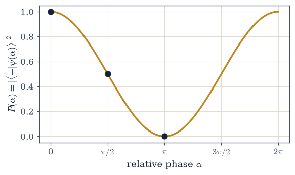

6.1 Complex Vector Spaces and Inner Products#
Notebook overview#
This is the first notebook of Volume VI, and it opens not with quantum physics but with the arena in which all of it takes place: the complex vector space. The strategy is the one Volume V used to such effect — build the mathematical toolkit first, cleanly and for its own sake, so that when the physics arrives it is never interrupted to stop and learn a technique. Volume VI’s opening movement is that toolkit, and it begins here, with the single object on which the entire theory is built: a vector of complex numbers.
Two facts about quantum states force this arena upon us, and both are worth feeling before we formalize them. The first is that states superpose: if a system can be in a state \(|a\rangle\) and in a state \(|b\rangle\), it can also be in any combination \(\alpha|a\rangle+\beta|b\rangle\). Things that add like that live in a vector space. The second, stranger fact is that the coefficients \(\alpha,\beta\) are complex — they carry a phase, and phases interfere. That single choice, complex rather than real scalars, is the source of nearly everything that makes quantum mechanics quantum, and we will see it most sharply at the end of this notebook in the difference between a global phase (which means nothing) and a relative phase (which means everything).
We develop the space gently but with full rigour. We will meet the inner product \(\langle u|v\rangle\), the machine that turns two states into a complex amplitude whose squared magnitude is a probability; the norm and normalization, which make a physical state a unit vector and encode the total probability \(\sum p=1\) of §5.2; orthonormal bases and the expansion coefficients that are the components we measure in; the Cauchy–Schwarz and triangle inequalities that give the space its geometry; and the global-versus-relative-phase distinction. The physics is woven in from the first line — amplitudes, probabilities, interference — but we stay honest about what we are doing: building the stage, not yet the play.
Throughout, every exercise follows the Volume VI contract: a clear statement that fixes the givens, the goal, and the notation with no hidden assumptions, followed by explicit enumerated parts naming the exact methods, so nothing is ever reverse-engineered. The difficulty lives in the mathematics, never in deciphering the question.
A word on notation (and its boundary). We write a state vector as a ket \(|\psi\rangle\) and the inner product of two states as \(\langle u|v\rangle\), from the very start — this is the universal shorthand of the subject, and you will see it everywhere. For now treat \(\langle u|v\rangle\) simply as the inner product of \(|u\rangle\) and \(|v\rangle\). The deeper reading of the bra \(\langle u|\) as an object in its own right — a dual vector, a linear functional — and the outer products and projectors that come with it, is the formal Dirac machinery of §6.3; we do not need it yet. We also stay strictly finite-dimensional here, in \(\mathbb{C}^n\). The word “Hilbert space” adds one more ingredient, completeness, which is automatic in finite dimensions and becomes the subtle heart of infinite-dimensional (wavefunction) spaces in §6.9.
How to read the checks. Each exercise closes with a
validatecall against an independent fact: the conjugate-first inner product matchingnumpy.vdot; Hermitian symmetry and sesquilinearity; a normalized state being a unit vector; expansion coefficients reconstructing a state with Parseval’s identity; Gram–Schmidt producing an orthonormal basis to machine precision; the Cauchy–Schwarz and triangle inequalities; and a global phase leaving every probability unchanged while a relative phase sweeps one from 1 to 0. A ✓ is strong evidence; a ✗ is a prompt to locate the discrepancy.Scope. The finite-dimensional complex inner-product space, computationally. Operators and the spectral theorem are §6.2; formal Dirac notation (the bra, projectors) is §6.3; the Born rule and the postulates, where \(|\langle e_i|\psi\rangle|^2\) becomes a measurement probability, are §6.5; infinite-dimensional spaces and wavefunctions are §6.9. See Sakurai & Napolitano, Modern Quantum Mechanics; Nielsen & Chuang, Quantum Computation and Quantum Information; Axler, Linear Algebra Done Right; and Notebooks §0.4–§0.5 (linear algebra), §5.2 (\(\sum p=1\)).
Theory in brief#
Why complex, and why vectors#
A quantum state is a vector in a complex vector space. Two facts force this: states superpose (the sum of two states is a state — a vector space), and the scalars are complex (amplitudes carry a phase that interferes). Concretely a state is a column of complex numbers — its components in some basis,
The Hermitian inner product#
The inner product of \(|u\rangle\) and \(|v\rangle\) is conjugate-linear in the first slot and linear in the second (the physics convention),
numpy.vdot(u, v) conjugates its first argument, so it matches this convention exactly — a
point worth flagging, because the opposite (math) convention conjugates the second, and the mismatch
is a classic bug. The inner product turns two states into a complex amplitude; \(|\langle
u|v\rangle|^2\) will be a probability (the Born rule, §6.5).
Norm and normalization#
The norm is \(\|\psi\|=\sqrt{\langle\psi|\psi\rangle}\), and \(\langle\psi|\psi\rangle\) is real and non-negative,
A physical state is a unit vector. This is exactly the \(\sum p=1\) of §5.2 — the total probability is one.
Orthonormal bases and components#
An orthonormal set satisfies \(\langle e_i|e_j\rangle=\delta_{ij}\). In such a basis any state expands with expansion coefficients given by inner products,
For a normalized state \(\sum_i|c_i|^2=1\), so the \(|c_i|^2\) are probabilities — the probabilities of the outcomes labelled by the basis (previewed; the full story is §6.5).
Cauchy–Schwarz and the triangle inequality#
Two inequalities give the space its geometry,
Cauchy–Schwarz (proved by minimizing \(\|u-\lambda v\|^2\)) guarantees the overlap of two normalized states has magnitude \(\le1\) — a probability amplitude is bounded — and it is the seed of the uncertainty relation (§6.6); the triangle inequality follows from it.
Global versus relative phase — the deep point#
Multiplying a whole state by a phase changes no probability,
so a global phase is physically meaningless — the true physical states are rays (states up to a global phase), not vectors, and the state space is projective. But the relative phase within a superposition, \(|0\rangle+e^{i\alpha}|1\rangle\), is fully physical: it is what interferes. This distinction — global phase nothing, relative phase everything — recurs all volume; for a qubit it is the difference between the global phase the Bloch sphere quotients away and the position on it (§6.8).
Hilbert space#
A Hilbert space is a complete inner-product space Eq. 493. Completeness (every Cauchy sequence converges) is automatic in finite dimensions and is the subtle ingredient that makes infinite-dimensional function spaces work (§6.9). For this notebook, “Hilbert space” means “finite-dimensional complex inner-product space, \(\mathbb{C}^n\).”
Setup#
Data and conventions only — this notebook’s Setup is nearly empty by design, because almost
everything in it is something you build. What is here: the two plotting colours, and the
inner-product convention every exercise computes in (conjugate the first slot, which is what
numpy.vdot does). The objects the notebook is named for stay in your hands: Exercise 1 forms the
inner product \(\langle u|v\rangle\) term by term, Exercise 2 writes the normalizer that makes a state
a unit vector, and Exercise 3 writes the Gram–Schmidt procedure that builds an orthonormal basis.
The Setup below holds this notebook’s data and instruments — nothing you are asked to build. It is collapsed so the building stays yours; expand it whenever you want the details.
Exercise 1 — Complex vectors and the inner product#
Let \(|u\rangle=(1+i,\ 2,\ -i,\ 3-i)^{\mathsf T}\) and \(|v\rangle=(2,\ 1-i,\ i,\ 1)^{ \mathsf T}\) be
vectors in \(\mathbb{C}^4\) Eq. 486. The inner product \(\langle u|v\rangle=\sum_i
u_i^{*}v_i\) conjugates the first slot Eq. 487, and three properties define it: that
numpy.vdot(u, v) reproduces it exactly, because vdot conjugates its first argument on the same
convention; that it is Hermitian-symmetric, \(\langle u|v\rangle=\langle v|u\rangle^{*}\); and that it
is sesquilinear — conjugate-linear in the first slot, \(\langle\lambda u|v\rangle=\lambda^{*}\langle
u|v\rangle\), and linear in the second, \(\langle u|\lambda v\rangle=\lambda\langle u|v\rangle\).
Construct the two complex vectors.
Compute \(\langle u|v\rangle\) two ways — by hand as \(\sum_i u_i^{*}v_i\) with
numpy.conj, and withnumpy.vdot(u, v)— and confirm they agree, which showsvdotconjugates the first argument.Verify Hermitian symmetry by comparing \(\langle u|v\rangle\) to \(\langle v|u\rangle^{*}\).
Verify sesquilinearity for a representative scalar \(\lambda=2-3i\), one slot at a time.
⟨u|v⟩ by hand Σ conj(u_i) v_i = (6-3j)
⟨u|v⟩ by np.vdot(u, v) = (6-3j) (agree: True)
Hermitian: ⟨u|v⟩ = ⟨v|u⟩*? True
conjugate-linear first slot ⟨λu|v⟩=λ*⟨u|v⟩: True; linear second ⟨u|λv⟩=λ⟨u|v⟩: True
Validation 1#
✓ the inner product ⟨u|v⟩ conjugates the first argument (physics convention; np.vdot matches it) [got (6-3j) vs expected (6-3j) (rtol=1e-12, atol=1e-09)]
✓ the inner product is Hermitian-symmetric and sesquilinear (conjugate-linear in the first slot, linear in the second)
True
Exercise 2 — Norm and normalization#
Take the vector \(|\psi\rangle=(1+i,\ 1-i,\ 2i,\ 1)^{\mathsf T}\in\mathbb{C}^4\). Its norm is \(\|\psi\|=\sqrt{\langle\psi|\psi\rangle}\) Eq. 488, which is well defined because \(\langle\psi|\psi\rangle\) — the overlap of a state with itself — is real and non-negative. The physical state is the unit vector in that same direction, \(|\hat\psi\rangle=|\psi\rangle/\|\psi\|\), for which \(\langle\hat\psi|\hat\psi\rangle=1\): this is exactly the \(\sum p=1\) of §5.2, the total probability. Normalizing is something this notebook will do again and again — Exercises 7 and 8 both start by building states this way — so it is worth having as a named function.
Compute \(\langle\psi|\psi\rangle\) with
numpy.vdot(psi, psi)and check it is real (inspect the.imagattribute) and \(\ge0\).Take the norm \(\|\psi\|=\sqrt{\langle\psi|\psi \rangle}\) with
numpy.linalg.norm.Write
normalize(psi), returning \(|\psi\rangle/\|\psi\|\) — the vector divided by itsnumpy.linalg.norm. It is one line, and it is yours for the rest of the notebook.Apply it to \(|\psi\rangle\) and confirm \(\langle\hat\psi|\hat\psi \rangle=1\) with
numpy.vdot— a physical state is a unit vector.
⟨ψ|ψ⟩ = (9+0j) (imaginary part = 0.0e+00, real and ≥ 0)
‖ψ‖ = √⟨ψ|ψ⟩ = 3.000000 (numpy.linalg.norm = 3.000000)
⟨ψ̂|ψ̂⟩ = 1.0000000000 (a unit vector: the total probability is one)
Validation 2#
✓ ⟨ψ|ψ⟩ is real (the overlap of a state with itself) [got 0 vs expected 0 (rtol=1e-06, atol=1e-12)]
✓ a normalized state is a unit vector, ⟨ψ|ψ⟩=1 (the total probability is one) [got 1 vs expected 1 (rtol=1e-12, atol=1e-09)]
True
Exercise 3 — Orthonormal bases and expansion coefficients#
An orthonormal set satisfies \(\langle e_i|e_j\rangle=\delta_{ij}\), and in such a basis a state expands as \(|\psi\rangle=\sum_i c_i|e_i\rangle\) with expansion coefficients \(c_i=\langle e_i|\psi\rangle\), while Parseval’s identity reads \(\|\psi\|^2=\sum_i|c_i|^2\) Eq. 489. For the normalized \(|\hat\psi\rangle\) of Exercise 2 that sum is \(1\), so the \(|c_i|^2\) are the probabilities of the outcomes this basis labels (previewed; the full story is §6.5). All of which needs a basis to work in, so we build one first. The Gram–Schmidt procedure turns any list of linearly independent vectors into an orthonormal basis for the same subspace, and it is short enough to state in a sentence: take the vectors one at a time, subtract from each one its projection onto every previously-accepted orthonormal vector — the projection of \(|w\rangle\) onto a unit \(|q\rangle\) is \(\langle q|w\rangle\,|q\rangle\) — and normalize what remains. Two details are where the work actually lives: the projections must use the conjugate-first inner product, and each new vector must be swept against all the vectors already accepted, not just the previous one. Exercise 4 puts the finished procedure through a harder test; here it is the tool that supplies a basis.
Write
gram_schmidt(vectors), returning the orthonormal vectors one per row: loop over the input vectors, subtract each projection withnumpy.vdot, and normalize the remainder withnumpy.linalg.norm. Write this one yourself — the implementation is the lesson.Apply it to four arbitrary independent complex vectors to obtain \(|e_0\rangle,\dots,|e_3\rangle\).
Verify the basis is orthonormal by building its Gram matrix \(G_{ij}=\langle e_i|e_j\rangle\) with
numpy.vdotand checking it equalsnumpy.eye(4).Compute the components \(c_i=\langle e_i|\hat\psi\rangle\) with
numpy.vdot(e_i, psi)(project onto each basis vector).Reconstruct \(|\hat\psi\rangle=\sum_i c_i|e_i\rangle\) as a Python sum and confirm it matches the original (
numpy.allclose).Verify Parseval, \(\sum_i|c_i|^2=\|\hat\psi\|^2=1\) (
numpy.abssquared, summed).
orthonormal? max|G − I| = 3.8e-16
reconstruction |ψ̂⟩ = Σ c_i|e_i⟩: max error = 3.4e-16
Parseval Σ|c_i|² = 1.0000000000 vs ‖ψ̂‖² = 1 (the |c_i|² are probabilities)
Validation 3#
✓ the expansion coefficients c_i=⟨e_i|ψ⟩ reconstruct the state [got 3.40218e-16 vs expected 0 (rtol=1e-06, atol=1e-12)]
✓ Parseval's identity: Σ|c_i|² = ‖ψ‖² = 1 (the |c_i|² are probabilities) [got 1 vs expected 1 (rtol=1e-12, atol=1e-09)]
True
Exercise 4 — Building an orthonormal basis: Gram–Schmidt#
Exercise 3 needed a basis and wrote gram_schmidt to get one; here the procedure itself goes under
the microscope, on a set chosen by hand rather than drawn at random. The four vectors below are
linearly independent but not remotely orthogonal — the first two overlap in their first component,
the last two in their fourth — so every projection subtraction in the loop has real work to do, and
a procedure that swept each vector against only its immediate predecessor would fail here. The
acceptance test is the Gram matrix of the output, \(G_{ij}=\langle e_i|e_j\rangle\)
Eq. 489: an orthonormal set has \(G=\mathbb{1}\), so \(\max_{ij}|G_{ij}-\delta_{ij}|\)
should sit at machine precision, and nothing less than machine precision will do.
Apply the
gram_schmidtyou wrote in Exercise 3 to the four independent complex vectors below.Verify the output is orthonormal by building its Gram matrix with
numpy.vdotand checking it equalsnumpy.eye(4), \(\max_{ij}|\langle e_i|e_j\rangle- \delta_{ij}|\approx0\).
Gram–Schmidt: subtract projections onto previous vectors, then normalize
resulting Gram matrix G_ij = ⟨e_i|e_j⟩: max|G − I| = 1.1e-15 (orthonormal to machine precision)
Validation 4#
✓ Gram–Schmidt produces an orthonormal basis (its Gram matrix is the identity) [got 1.06317e-15 vs expected 0 (rtol=1e-06, atol=1e-12)]
True
Exercise 5 — The Cauchy–Schwarz inequality#
The Cauchy–Schwarz inequality \(|\langle u|v\rangle|\le\|u\|\,\|v\|\) Eq. 490 comes out of nothing more than the positivity of the norm. The vector \(|u\rangle-\lambda|v\rangle\) has non-negative norm for every \(\lambda\); choosing \(\lambda=\langle v|u\rangle/\langle v|v\rangle\) — the value that minimizes \(\|u-\lambda v\|^2\) — and expanding \(0\le\|u-\lambda v\|^2\) gives \(|\langle u|v\rangle|^2\le\langle u|u\rangle\langle v|v\rangle\), which is the inequality squared. The same argument says when it is tight: only if that minimized vector vanishes outright, that is only if \(|u\rangle\) and \(|v\rangle\) are parallel. Its importance is that it bounds the overlap of two normalized states by \(1\) — a probability amplitude is bounded — and that it is the seed of the uncertainty relation (§6.6).
Verify the inequality numerically on a thousand random complex pairs, comparing \(|\langle u|v\rangle|\) (
abs(numpy.vdot(u, v))) against \(\|u\|\,\|v\|\) (numpy.linalg.norm).Show equality holds when \(|v\rangle\parallel |u\rangle\) (build \(|v\rangle=\mu|u\rangle\) by scalar multiplication).
Cauchy–Schwarz |⟨u|v⟩| ≤ ‖u‖‖v‖ on 1000 random pairs: all satisfied = True
the gap ‖u‖‖v‖ − |⟨u|v⟩| is always ≥ 0 (minimum 3.23e-01)
parallel vectors v = (3−2i)u: ‖u‖‖v‖ − |⟨u|v⟩| = -3.6e-15 (equality)
Validation 5#
✓ the Cauchy–Schwarz inequality |⟨u|v⟩| ≤ ‖u‖‖v‖ holds for all tested pairs
✓ Cauchy–Schwarz is an equality exactly when the vectors are parallel [got -3.55271e-15 vs expected 0 (rtol=1e-06, atol=1e-10)]
True
Exercise 6 — The triangle inequality#
The triangle inequality \(\|u+v\|\le\|u\|+\|v\|\) Eq. 491 follows from Cauchy–Schwarz in three moves: expand \(\|u+v\|^2=\|u\|^2+2\,\mathrm{Re}\langle u|v\rangle+\|v\|^2\), bound \(\mathrm{Re}\langle u|v\rangle\le|\langle u|v\rangle|\le\|u\|\|v\|\), and recognize the right-hand side as \((\|u\|+\|v\|)^2\). This is the geometry of the space — distances between quantum states obey the same triangle law as distances in ordinary geometry.
Verify it numerically with
numpy.linalg.norm, checking \(\|u+v\|\le\|u\|+\|v\|\) on a thousand random complex pairs.
triangle inequality ‖u+v‖ ≤ ‖u‖+‖v‖ on 1000 random pairs: all satisfied = True
Validation 6#
✓ the triangle inequality ‖u+v‖ ≤ ‖u‖+‖v‖ holds
True
Exercise 7 — Global versus relative phase#
Here is the central phase distinction of quantum mechanics, in two halves. Multiplying a whole state by a global phase, \(|\psi\rangle\to e^{i\theta}|\psi\rangle\), changes no probability at all: \(|\langle\phi|e^{i\theta}\psi\rangle|^2=|\langle\phi|\psi\rangle|^2\) for any \(|\phi\rangle\), because the phase leaves the modulus untouched Eq. 492. The relative phase within a superposition is a different animal entirely. For the qubit state \(|\psi(\alpha)\rangle=(|0\rangle+e^{i\alpha}|1\rangle)/\sqrt2\) measured against the fixed \(|{+}\rangle=(|0\rangle+|1\rangle)/\sqrt2\), the probability is \(P(\alpha)=|\langle{+}|\psi(\alpha)\rangle|^2=(1+\cos\alpha)/2\), which sweeps all the way from \(1\) to \(0\) as \(\alpha\) runs from \(0\) to \(\pi\). The consequence: physical states are rays (states up to a global phase), not vectors, and the relative phase is the seat of interference — for a qubit, the position on the Bloch sphere (§6.8).
Build a state \(|\psi\rangle\) and a test state \(|\phi\rangle\) with the
normalizeyou wrote in Exercise 2; apply the global phase withnumpy.exp(1j*theta)and compute \(|\langle\phi|\psi\rangle|^2\) and \(|\langle\phi|e^{i\theta}\psi\rangle|^2\) withabs(numpy.vdot(...))**2for a representative \(\theta\), confirming they are equal.Form the superposition \(|\psi(\alpha)\rangle\) (the relative phase \(e^{i\alpha}\) via
numpy.exp) and the state \(|{+}\rangle\).Compute \(P(\alpha)=\)
abs(numpy.vdot(plus, psi_alpha))**2for \(\alpha=0,\ \pi/2,\ \pi\) and watch it run \(1\to\tfrac12\to0\).Plot the full fringe over a
numpy.linspacegrid in \(\alpha\) withmatplotlib, dotting the three computed points onto the analytic curve.
global phase: |⟨φ|ψ⟩|² = 0.445341, |⟨φ|e^(iθ)ψ⟩|² = 0.445341 (equal: True)
relative phase within (|0⟩ + e^(iα)|1⟩)/√2, measured against |+⟩:
α = 0.0000: P(α) = |⟨+|ψ(α)⟩|² = 1.0000 (= (1+cos α)/2)
α = 1.5708: P(α) = |⟨+|ψ(α)⟩|² = 0.5000 (= (1+cos α)/2)
α = 3.1416: P(α) = |⟨+|ψ(α)⟩|² = 0.0000 (= (1+cos α)/2)
Validation 7#
✓ a global phase leaves every probability unchanged, |⟨φ|e^(iθ)ψ⟩|² = |⟨φ|ψ⟩|² (physical states are rays) [got 0.445341 vs expected 0.445341 (rtol=1e-12, atol=1e-09)]
✓ the relative phase within a superposition is physical: P(α) sweeps 1 → ½ → 0 [max|Δ| = 4.44089e-16 (rtol=1e-06, atol=1e-12)]
True

Fig. 511 Global phase nothing, relative phase everything. The probability \(P(\alpha)=|\langle{+}|\psi(\alpha)\rangle|^2=(1+\cos\alpha)/2\) of finding the superposition \(|\psi(\alpha)\rangle=(|0\rangle+e^{i\alpha}|1\rangle)/\sqrt2\) in the state \(|{+}\rangle\), as the relative phase \(\alpha\) is swept (amber), with the three computed points (dots) at \(\alpha=0,\pi/2,\pi\) where \(P=1,\tfrac12,0\). The relative phase tunes the interference continuously from full constructive to full destructive — it is fully physical. A global phase, by contrast, would move the whole curve not at all: it changes no probability, which is why physical states are rays, not vectors. This single fringe is the seed of every interference effect in the volume.#
Exercise 8 — Overlap, distinguishability, and orthogonality#
For two normalized states \(|\phi\rangle\) and \(|\psi\rangle\) in \(\mathbb{C}^n\), the magnitude of their overlap \(|\langle\phi|\psi\rangle|\) measures how alike they are Eq. 487, and it lives between the two extremes Cauchy–Schwarz allows Eq. 490. Orthogonal states have overlap \(0\) and are perfectly distinguishable; states equal up to a phase have overlap \(1\), the bound attained, and are not distinguishable at all. In between, \(|\langle\phi|\psi\rangle|^2\) is to be read as the probability that a system prepared in \(|\psi\rangle\) passes a test for \(|\phi\rangle\) — a preview of the Born rule, whose full statement is §6.5.
Build normalized states with the
normalizeyou wrote in Exercise 2: an orthogonal pair, a phase-shifted copy (numpy.exp(1j*θ)times a state), and a generic state.Compute \(|\langle\phi|\psi \rangle|\) for each with
abs(numpy.vdot(phi, psi)).Read off the three cases: \(0\) for the orthogonal pair, \(1\) for the phase-shifted copy, and for the generic pair the “pass a test for \(\phi\)” probability \(|\langle\phi|\psi\rangle|^2\).
overlap |⟨φ|ψ⟩| measures distinguishability:
orthogonal states: |⟨φ|ψ⟩| = 0.0000 → perfectly distinguishable (prob 0)
equal up to a phase: |⟨φ|ψ⟩| = 1.0000 → indistinguishable (prob 1)
a generic state: |⟨φ|ψ⟩| = 0.8165 → P(pass test for φ) = 0.6667
Validation 8#
✓ the overlap measures distinguishability: 0 for orthogonal states, 1 for identical-up-to-phase, bounded by 1 (Cauchy–Schwarz)
True
Exercise 9 — The arena of quantum mechanics (synthesis)#
We have built the stage. A quantum state is a unit vector in a complex inner-product space — more precisely a ray, since a global phase carries no physics. The inner product turns two states into a complex amplitude, and the squared magnitude of that amplitude is a probability, bounded by one through Cauchy–Schwarz and summing to one through normalization, exactly the \(\sum p=1\) of §5.2. An orthonormal basis resolves any state into components whose squared magnitudes are the probabilities of the outcomes that basis labels, and Gram–Schmidt lets us build such a basis at will. And the relative phase within a superposition — invisible to the global phase, fully alive within — is the seat of interference. Everything in quantum mechanics will be linear algebra on this space, and we can compute all of it.
There is no new computation to do: the arena itself is the result. We have not done any quantum physics yet — only built the space it lives in. But every strange thing to come — interference, uncertainty, entanglement — is already implicit in two facts established here: the scalars are complex, and only relative phases are real. The next notebook (§6.2) brings the actors onto this stage: the operators, whose Hermitian ones are the observables we measure and whose unitary ones are the symmetries and the dynamics, together with the spectral theorem that diagonalizes them.
Notebook summary#
Volume VI opens with its mathematical arena, the finite-dimensional complex inner-product space, built computationally and with the physics woven in.
States are complex vectors Eq. 486: superposition makes them a vector space, complex scalars make phases interfere; a qubit lives in \(\mathbb{C}^2\).
The Hermitian inner product Eq. 487: \(\langle u|v\rangle=\sum_i u_i^{*}v_i\), conjugate-linear in the first slot (so
numpy.vdotmatches it), Hermitian-symmetric and sesquilinear — the machine that makes amplitudes.Norm and normalization Eq. 488: a physical state is a unit vector, \(\langle\psi|\psi \rangle=1\) — the \(\sum p=1\) of §5.2.
Orthonormal bases and Parseval Eq. 489: \(c_i=\langle e_i|\psi\rangle\) reconstruct the state, \(\sum_i|c_i|^2=1\), the \(|c_i|^2\) are probabilities; Gram–Schmidt builds the basis to machine precision.
Cauchy–Schwarz and triangle Eq. 490, Eq. 491: the overlap of two normalized states is bounded by one (a bounded amplitude; the seed of uncertainty, §6.6), and the space obeys the triangle law.
Global versus relative phase Eq. 492: a global phase changes no probability (states are rays), but the relative phase within a superposition sweeps \(P\) from \(1\) to \(0\) — the seat of interference.
We have not done quantum physics, only built the space it lives in — yet interference, uncertainty, and entanglement are already implicit in two facts: the scalars are complex, and only relative phases are physical.
Outlook#
Operators and the spectral theorem (§6.2). The actors on this stage: Hermitian operators (observables, with real spectra and orthonormal eigenbases) and unitary operators (symmetries and dynamics), and the spectral theorem that diagonalizes them.
Dirac notation made formal (§6.3). The bra \(\langle u|\) as a dual vector in its own right, outer products, projectors, and the resolution of the identity — the machinery this notebook used \(\langle u|v\rangle\) as shorthand for.
The Born rule and the postulates (§6.5). Where \(|\langle e_i|\psi\rangle|^2\) becomes, by postulate, the probability of a measurement outcome.
The uncertainty principle (§6.6). Grown from the Cauchy–Schwarz inequality met here.
The Bloch sphere (§6.8) and infinite-dimensional Hilbert spaces (§6.9). The qubit’s ray as a point on a sphere; and wavefunctions, where completeness becomes essential.
Cross-reference §0.4–§0.5 (linear algebra), §5.2 (\(\sum p=1\)), and forward to §6.2, §6.3, §6.5, §6.6, §6.8, §6.9.